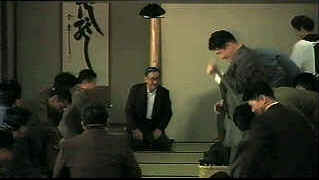

| Madadayo/C-,D+ |
| Winstar/1992/134/WS 1.85 |
Akira Kurosawa's swan song should have been
a better a movie. It's small in scope, visually claustrophobic, and the plot is often annoying. How
could the master director spend almost half an hour on the subject of a lost cat. Did I miss
something?
 |
| The sensei and his students.
©Winstar |
Madadayo opens in Tokyo 1943
as a revered professor announces his retirement to his students after thirty years in front of
classrooms. Former students are totally devoted to their professor and fawn on his every word as if
he were Socrates or Shakespeare. There's a strange absence of acknowledgement of the war, though
bomb damage impacts on the script. I wondered why all these young men were not serving somewhere on
the war front. But, that's the least of the problems of Madadayo, which translates to
"not yet." At every turn, the professor's students jump to attention at his beck and
call. They don't even seem to have lives of their own. Their obsequious laughter responds to every
supposedly witty remark uttered by the professor.
There are elements of charm in depicting the relationships of professor to his
students, but it wears thin after a while and the lost cat is simply the last straw. The center
piece of Madadayo is the annual birthday celebration for the professor organized by his
former students. The affair becomes more ritualized through the years.
The acting seems right out of a soap opera. Subtlety is not the order of the day
in Madadayo. The script subverts any potential from these cardboard characters. After two
hours spent with Madadayo, you don't get to know much about the characters.
Kurosawa's legendary cinematic compositions are seldom in evidence. The camera is
static and uninteresting. Only the beautiful closing transcends everything that came before it in a
reminder of the visual power of Kurosawa's Dreams.
Sadly, the transfer of Madadayo is even more disappointing than the film.
It's simply ugly. Edge enhancement permeates every aspect of the transfer. It's very prominent.
There's even faint ghosting and color smear on many outdoor scenes is awful. Lots of soft images
despite the pervasive enhancement. Jitter is evident in a number of scenes. Flesh tones are pasty,
unappealing. There's little vitality in evidence in this DVD. The sound is pedestrian and there are
several scenes in which an annoying hum creeps in to accompany the lousy picture. At least the
yellow English subtitles are easy to read and the simple story easy to follow. The best thing about
the DVD is a small presentation of several beautiful Kurosawa drawn story boards. The vitality is
absent fromt he movie.
|
|
|
|

Selections from the Feature Archive
include articles on Akira Kurosawa, Frank
Darabont, Blonde Bimbos, Hollywood Street Gangs, or Vietnam: The
Hollywood Pariah, and many more....
Epic Images of Kurosawa

Click on the image above for an original view of Akira Kurosawa's work


Jou Du/A,B-

A sexy Chinese noir. Bold colors paint stirring emotions in a small
provincial town.

Need a daily fix of movie
quotes. Reel Quotes Newsletter has the answer. Click on the Reel Quotes symbol for more.

The
Movie Poster Archive include extensive poster images from the films of stars like Susan Hayward,
Kirk Douglas, Katharine Hepburn and many more. Our featured star is Robert Mitchum |